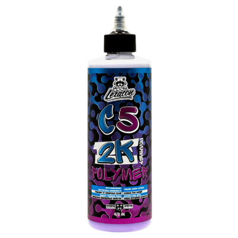
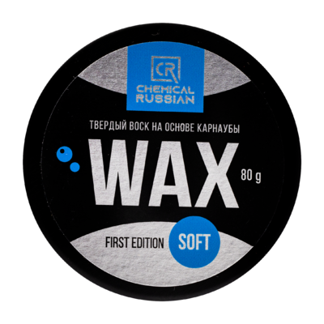
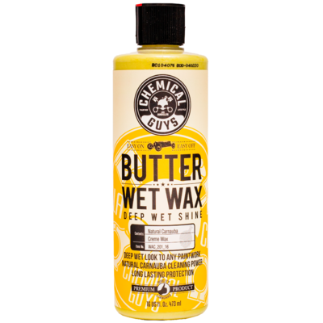
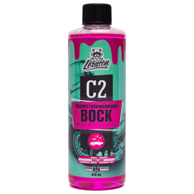
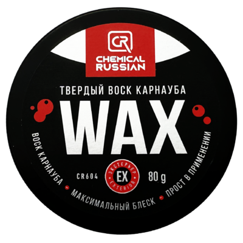
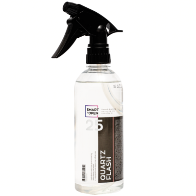
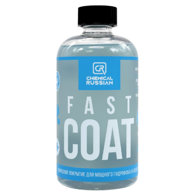
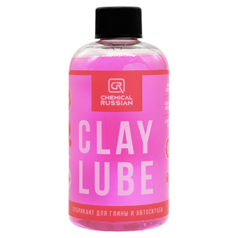
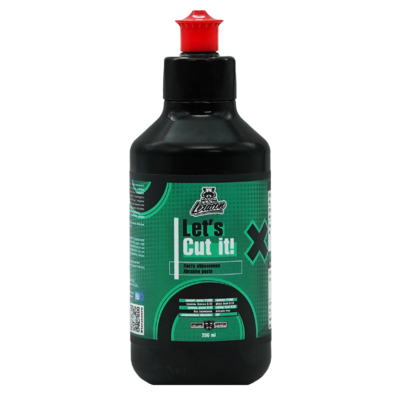
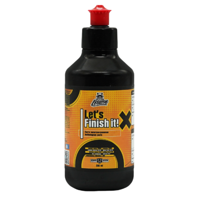

Спрей-воск для быстрого придания зеркального блеска автомобилю. Благодаря содержанию карнаубского воска состав S2 увеличивает глубину цвета и придает «мокрый» блеск ЛКП, а также защищает поверхность от воздействия солнечных лучей и влияния окружающей среды. За счет простого нанесения рекомендуется использовать как выставочный состав для автомобилей всех цветов и оттенков.
Распылить средство на чистый автомобиль на расстоянии 10 см от обрабатываемой поверхности. Располировать чистой микрофибровой салфеткой с длинным ворсом.
-
1
+
Полирующий нановоск LERATON C1 (473 мл.)
640 руб.
Нановоск для кузова автомобиля. Новейшие компоненты покрывают кузов невидимой пленкой, состоящей из наночастиц, благодаря чему не только ускоряют сушку, но и оставляют после нанесения антистатическую водоотталкивающую пленку стойкостью до 5 моек. Усиливает блеск и облегчает удаление загрязнений. Входящие в состав компоненты нейтрализуют остатки щелочных средств, использованных при мойке, а также удаляют остатки известковых загрязнений и солей жесткости. Рекомендуется применять как завершающий состав для трехфазной мойки.
Наносить на чистый кузов автомобиля при помощи пенокомплекта (разведение 1:10) или пневмораспылителя (разведение 1:30). Смыть водой остатки воска. Протереть кузов микрофибровым полотенцем.
-
1
+

2к Полимер LERATON C5 473мл
640 руб.
Двухкомпонентный полимер-консервант для использования на влажных поверхностях после мойки автомобиля. Очищает кузов от следов реагента и статических загрязнений. Придает длительный блеск и защищает все виды ЛКП, пластик, хром и стекло. Усиливает глубину цвета молдингов и хромированных деталей, исключая помутнение резины и пластиковых элементов кузова. По своим гидрофобным свойствам не имеет аналогов на рынке! Не содержит абразивов.
Взболтать. Нанести на поверхность, используя губку, или распылить при помощи триггера. Растереть по кузову и слегка сбить водой. Протереть кузов микрофибровым полотенцем.
-
1
+
Горячий воск LERATON C4 473 мл
535 руб.
Полироль, позволяющий одновременно на срок до 4-х недель глубоко очистить, придать блеск и защитить лакокрасочную поверхность. Частично заполняет и скрывает царапины. Благодаря современным силиконам, полимерам и воскам придает поверхности непревзойденный блеск. Защищает лакокрасочную поверхность автомобиля и создает потрясающий гидрофобный эффект. Рекомендуется наносить после состава N1 для усиления блеска. Состав активизируется в горячей воде.
Вылить 50 мл воска в ведро (емкостью 10 л) с горячей водой. Обработать кузов с помощью губки, ополаскивая ее в ведре по необходимости. Смыть водой и насухо протереть микрофибровым полотенцем.
-
1
+

Chemical Russian Твердый воск Soft Wax 80 гр CR811
1175 руб.
Soft wax - более мягкое исполнение классического карнаубского воска с сочетанием растительных масел. Насыщает цвет и придает глубокий блеск ЛКП. При правильном уходе, рекомендуем обновлять покрытие через 4-6 недель.
Нанесите воск при помощи аппликатора на обрабатываемую поверхность ровным слоем.
Подождите 5-10 минут, воску нужно полимеризоваться.
Далее располируйте состав микрофибровой салфеткой.
-
1
+
Быстрый блеск LERATON S1 473мл
960 руб.
Состав для придания быстрого и глубокого блеска автомобилю. Сочетает в себе полимеры и новейшие силиконы, благодаря которым поверхность ЛКП обретает стойкий мокрый блеск и гидрофобный эффект. Уменьшает пылеобразование за счет придания поверхностям антистатических свойств и придает поверхности уникальную гладкость. Для получения более стойкого эффекта рекомендуется обезжирить кузов перед нанесением.
Распылить средство на влажную или сухую поверхность на расстоянии 10 см от обрабатываемой поверхности. Располировать чистой микрофибровой салфеткой.
-
1
+
Синтетический детейлер-спрей LERATON S4 ORIGINAL 473мл.
400 руб.
Синтетический быстрый детейлер моментально придает зеркальный блеск любой поверхности автомобиля. Обладает сильными гидрофобными свойствами. Идеален для очистки пятен от воды и пыли. Продлевает срок жизни воскового покрытия.
Распылить средство на влажную или сухую поверхность на расстоянии 10 см от обрабатываемой поверхности. Располировать чистой микрофибровой салфеткой.
-
1
+
Синтетический детейлер-спрей LERATON S4 MINT BUBBLEGUM 473мл
400 руб.
Синтетический быстрый детейлер моментально придает зеркальный блеск любой поверхности автомобиля. Обладает сильными гидрофобными свойствами. Идеален для очистки пятен от воды и пыли. Продлевает срок жизни воскового покрытия.
Распылить средство на влажную или сухую поверхность на расстоянии 10 см от обрабатываемой поверхности. Располировать чистой микрофибровой салфеткой.
-
1
+
Силант LERATON X1 473мл
1650 руб.
Является синтетическим продуктом, предназначенным для длительной защиты лакокрасочного покрытия. Прост в применении и делает поверхность блестящей. Это сверхпрочный защитный силант, предохраняющий лакокрасочное покрытие кузова вашего автомобиля от самых суровых воздействий окружающей среды - жесткой воды, загрязнений, дорожной грязи и УФ-излучения. В его состав входят новейшие полимеры, обеспечивающие непревзойденную защиту, прекрасный финишный результат и бриллиантовое сияние. Надолго защитит и придаст гидрофобный эффект любым типам поверхностей.
Нанести немного средства на поверхность при помощи аппликатора. Выждать 10-15 минут, пока состав не начнет подсыхать. Располировать чистой микрофибровой салфеткой с длинным ворсом стеклянного блеска.
-
1
+
Кварцевый состав для быстрого блеска и гидрофоба LERATON S6 473мл.
800 руб.
Кварцевый состав для быстрого придания гидрофобного эффекта длительного действия. Наносится на мокрый автомобиль. Наделяет все поверхности автомобиля водоотталкивающими свойствами сроком до 1 месяца или на 5-6 моек. Прекрасно подходит для быстрого детейлинга или как третья фаза в качестве длительного консерванта после мойки. Усиливает блеск и антистатические свойства поверхностей. Состав готов к применению и не требует разбавления.
Предварительно вымыть автомобиль (рекомендуем мойку по двухфазной технологии). Используя триггерный распылитель, нанести на мокрый автомобиль и смыть под большим давлением водой при помощи АВД. Высушить автомобиль микрофибровым полотенцем.
-
1
+
Soft99 Полироль для кузова защитный (для темных) Soft Wax 300г 00010
950 руб.
Soft Wax создаёт красивый и прочный защитный слой. Содержит воск карнаубы. Имеет мягкий очищающий эффект, защищает окрашенную поверхность, создавая прочную водостойкую оболочку. Рекомендуется использовать 1 раз в месяц.
Хорошо помойте машину.
Возьмите немного средства губкой и равномерно тонким слоем нанесите на поверхность.
Сильно загрязненные места потрите.
Не оставляйте полироль на корпусе на долгое время, т.к. могут появиться пятна и полироль будет трудно стереть.
Через 5-10 мин, сотрите остатки полироли чистым сухим полотенцем.
Если поверхность сильно загрязнена или потрескалась, предварительно обработайте ее очистителем или полиролем с абразивом.
-
1
+

Chemical Guys Крем-воск специальной винтажной серии Butter Wet Wax WAC_201_16 473мл
2980 руб.
Butter Wet Wax - это гладкий жидкий крем-воск, который растворяется в краске, как масло, придавая автомобилю самый глубокий и мокрый блеск, который только можно себе представить, за считанные минуты.
Butter Wet Wax заставляет вашу краску сиять яркой магией натурального карнаубского воска, взятого из листьев бразильских растений. Эти полностью натуральные ингредиенты не только борятся с суровым воздействием окружающей среды, они также были усовершенствованы, чтобы легко защитить ваш автомобиль от легких потертостей, птичьего помета, дорожной смолы и древесного сока.
Почему стоит выбрать именно этот продукт? Он в прямом смысле слова впитывается в поверхность, на которую его наносят, как будто крем в кожу. Профессионалы ухода за автомобилями и простые автолюбители выбрали именно его за уникальные защитные свойства, слепящий блеск и простоту нанесения.
Секрет Butter Wet Wax кроется не только в том, что он обновляет покрытие, заставляя его блестеть. Благодаря этому уникальному продукту красный цвет превращается в пламя, белый – в свежевыпавший снег, голубой – в бескрайнее небо, а черный – в глубокую ночь! Крем-воск идеален для любых покрытий, как для базовых цветов, так и для сложных перламутра и металлика.
Хорошо встряхните бутылку.
Нанесите тонкий ровный слой на поверхность с помощью высококачественного микрофибрового или поролонового аппликатора (наносить много смысла нет, излишки продукта останутся на микрофибре при располировывание).
Используйте этот воск на блестящих и прозрачных внешних деталях автомобиля, таких как ЛКП, стекло, прозрачный пластик и полированный металл.
Выждите 10-15 мин.
Отполируйте остатки мягкой салфеткой из микрофибры.
-
1
+
Shima Detailer Покрытие на основе кварца (sio2) Quartz 500мл
1020 руб.
Инновационное покрытие для ЛКП автомобиля с уникальной формулой на кварцевой основе. Благодаря содержанию этого компонента, это покрытие сверх устойчиво к воздействию агрессивных моющих средств и служит намного дольше обычных защитных покрытий на основе воска или полимеров. Создает мощный гидрофобный эффект на поверхности, придает глубокий блеск, поверхности ЛКП.
Предварительно вымыть автомобиль любым средством для бесконтактной мойки "SHIMA".
Далее для более глубокой очистки кузова необходимо произвести тщательное удаление оставшихся загрязнений таких, как смола и битум, металлические вкрапления во избежание дальнейшего закрепления данных загрязнений кварцевым покрытием на ЛКП (для удаления смолы и битума рекомендуется использовать GREEN CLEANER, для удаления металлических вкраплений – FERRUM GEL).
Следующим этапом необходимо смыть остатки предыдущих очистителей шампунем для ручной мойки PRE SHAMPOO.
Затем подетально нанести состав при помощи распылителя на мокрый кузов.
Распределить состав по поверхности с помощью поролонового аппликатора.
Смойте состав с поверхности водой под давлением. Важно! Не допускать высыхания состава на кузове.
Протрите насухо искусственной замшей или микрофиброй.
Готовый раствор кварцевого покрытия с мощным гидрофобным эффектом и блеском.
Hydro Wet Coat (HW) за считанные секунды создаёт микрослой, обеспечивающий грязе- и водоотталкивающий эффект. Инновационное средство разработано для профилактики всех профессиональных защитных покрытий в условиях автомоечного комплекса. Подходит для следующих поверхностей: кузов автомобиля, наружный пластик, стёкла, шины и диски. Средство устойчиво к щелочам и другой агрессивной дорожной химии. Длительный срок службы в отличие от жидких восков - до 3-х месяцев. pH: 4
Произведите двухфазную мойку при помощи состава для предварительной мойки (Active Safe (AS) или Ultra Safe (US)) и шампуня для ручной мойки без силиконов и усилителей блеска (Second Phase (SP) или Acid Shampoo (AD)). 2. Не дожидаясь высыхания автомобиля, распылите состав Hydro Wet Coat (HW) по всей его поверхности (по желанию нанесите на шины и диски). 3. Не дожидаясь высыхания состава, промойте обработанную поверхность водой под давлением. Примечание: для достижения максимального результата после распыления Hydro Wet Coat (HW) поверхность автомобиля можно протереть влажной губкой.
-
1
+
Покрытие для кузова SONAX ProfiLine Polymer Netshield 340 мл
2485 руб.
Polymer Netshield - это уникальное средство для защиты лакокрасочного покрытия.Защищает лакокрасочное покрытие автомобиля от возникновения царапин и от загрязнений, а также придает ему блеск. Действует от 6 месяцев до 8 месяцев.
Polymer Netshield абсолютно безвреден для поверхности, потому что имеет безабразивный состав. Состав придаёт мощный гидрофобный эффект. Кроме этого, после нанесения автомобиль сияет благодаря эффекту восстановления цвета.
Покрывать автомобиль лучше всего после полировки, но можно и просто после тщательной мойки.
Равномерно нанести на все детали кузова с помощью микрофибрового или поролонового аппликатора.
Сразу располировать состав мягкой микрофиброй.
Подождать, пока Polymer Netshield высохнет на поверхности.
-
1
+
Консервант поверхностей на основе диоксида кремния Ultra MIZU Coat 500мл.
1670 руб.
Мощнейший консервант для ЛКП автомобиля с уникальной формулой на основе диоксида кремния. Концентрированная версия предназначена для профессионального применения в условиях автомойки. Создает мощный гидрофобный эффект на поверхности, одновременно придавая неповторимый глубокий стекловидный блеск. Снижает вероятность появления царапин благодаря созданию пленки на поверхности ЛКП с эффектом скольжения и гладкости, снижающим трение.
Просто распылите его на мокрую чистую поверхность и смойте под давлением. Состав образует микропленку на поверхности. Характеризуется высокой гидрофобностью, придает отличный стекловидный блеск и насыщает цвет. Состав полностью полимеризуется в течение 8 часов, поэтому блеск раскрывается не сразу и усиливается в процессе полимеризации. Стойкость до 3-х месяцев.
-
1
+

Воск для быстрой сушки LERATON C2 473мл.
450 руб.
Осушитель-кондиционер для кузова автомобиля. Не только ускоряет сушку, но и оставляет после нанесения антистатическую водоотталкивающую пленку. Входящие в состав компоненты нейтрализуют остатки щелочных средств, использованных при мойке, а также удаляют остатки известковых загрязнений и солей жесткости. Сушка автомобиля возможна сразу после нанесения средства, без дополнительного ополаскивания водой.
Наносить на чистый кузов автомобиля при помощи пенокомплекта (разведение 1:10) или пневмораспылителя (разведение 1:30). Смыть водой остатки воска. Протереть кузов микрофибровым полотенцем.
Ultra Cut Compound - уникальный абразивный состав, который прекрасно подходит для удаления царапин, следов шлифования, следов кислотных дождей и других серьёзных дефектов лакокрасочного покрытия. Подходит для первого этапа абразивной полировки. Отлично подходит для работы с твёрдыми заводскими и ремонтными лакокрасочными покрытиями.
Наносите состав в тени на охлажденную поверхность, подготовленную к обработке;
Хорошо взболтайте бутылку;
Работайте на одном небольшом участке;
Установите скорость машинки на 1500-2000 оборотов;
Используйте шерстяные круги;
Если круг используется впервые, нанесите немного специального состава Final Inspection.
Работайте полиролью Ultra Cut Compound по окрашенной поверхности шаг за шагом, начинайте полировать на небольшом участке, немного перекрывая обрабатываемый участок;
Продолжайте полировать до полного устранения дефектов;
Оценивайте поверхность, используя микрофибровую салфетку Supreme Shine Microfiber Towel;
Для финального полирования выберите подходящий полировальник Meguiar’s и нужную полироль.
F5.01 предназначена для окончательной обработки ЛКП, поликарбоната и других материалов с помощью полировальной роторной машинки, либо вручную. Применяется для удаления неглубоких потёртостей и рисок, полученных в процессе эксплуатации поверхностей, а так же для полировки предварительно отшлифованных абразивом (не грубее Р1500) свеженанесённых лаков и эмалей.
Нанести небольшое количество пасты на круг;
Равномерно распределить по поверхности ЛКП;
Выполировать до практически чистой поверхности;
При необходимости повторить еще раз.
Зеркальный блеск, эффект водонепроницаемости и интенсивная защита. Инновационный консервирующий полимер премиум–класса устанавливает новые стандарты в области обеспечения защиты и стойкости, придания экстремально насыщенного блеска и длительного водоотталкивающего свойства (эффект гидрофобности).
При регулярном применении имеет накопительный эффект, что позволяет значительно повысить защитные функции состава и увеличить блеск ЛКП, резиновых, пластмассовых деталей, а также материалов для крыш кабриолетов, таким образом предотвращая потерю сочности цвета. При применении воздуходувного устройства с помощью данного продукта достигаются оптимальные результаты сушки.
Специальные вещества обеспечивают фруктовую ароматизацию воздуха. Стойкость состава до 5–6 моек. Накопительный эффект.
Нанести состав на влажное и чистое авто;
Спустя 1 минуту смыть потоком воды;
Просушить кузов воздухом или чистым протирочным материалом.
Готовое к применению быстрое гидрофобное покрытие для кузова автомобиля на основе диоксида кремния с ароматом малинового клубнично-бананового леденца. Придает обрабатываемой поверхности сильные грязе- и водоотталкивающие свойства, а так же легкий блеск.
Тщательно вымойте автомобиль;
Сбейте остатки моющих средств водой под высоким давлением;
Поэлементно нанесите состав на мокрый кузов автомобиля (1 распыление на элемент, 2 на капот и крышу);
Для наилучшего эффекта рекомендуется дополнительно разнести состав губкой, падом или влажной салфеткой из микрофибры;
Не допускайте высыхания, смойте состав водой под высоким давлением;
Высушите автомобиль как обычно;
Избегайте использование состава под прямыми солнечными лучами, а так же при температуре окружающего воздуха выше 25 градусов.
-
1
+

Chemical Russian Твердый воск карнауба Wax 80 гр. CR604
1070 руб.
Wax - натуральный карнаубский воск в сочетании с инновационными синтетическими компонентами создает на обработанной поверхности насыщенный цвет, зеркальный блеск и мощный гидрофобный эффект, защищая при этом кузов от вредных воздействий окружающей среды. Состав легок в нанесении.
Очистите и высушите кузов автомобиля.
Нанесите соответствующее количество продукта на поролоновый аппликатор и распределите тонким слоем на кузов автомобиля.
Подождите до высыхания в течение 20 минут, затем располируйте излишки микрофиброй.
-
1
+

Кварцевое покрытие с гидрофобным эффектом и блеском Smart Open QUARTZ FLASH 500мл
570 руб.
Средство предназначено для формирования устойчивого гидрофобного, защитного покрытия на поверхности кузова автомобиля. Содержащиеся в составе полифункциональные соединения оксида кремния обеспечивают длительную защиту и блеск лакокрасочного покрытия. Состав наносится в один слой на влажную поверхность лакокрасочного покрытия сразу после двухфазной мойки автомобиля.
Перед применением тщательно перемешать. Не наносить на недомытую поверхность!
Распылить средство на мокрую чистую поверхность автомобиля при помощи триггера (1 распыление на 1 деталь), и равномерно распределить чистой крупнопористой губкой;
Ополоснуть кузов водой, располировать насухо замшевой тряпкой или микрофиброй.
-
1
+
Кварцевый состав для быстрого блеска и гидрофоба LERATON S6 GRAPE 473мл.
800 руб.
Кварцевый состав для быстрого придания гидрофобного эффекта длительного действия. Наносится на мокрый автомобиль. Наделяет все поверхности автомобиля водоотталкивающими свойствами сроком до 1 месяца или на 5-6 моек. Прекрасно подходит для быстрого детейлинга или как третья фаза в качестве длительного консерванта после мойки. Усиливает блеск и антистатические свойства поверхностей. Состав готов к применению и не требует разбавления.
Предварительно вымыть автомобиль (рекомендуем мойку по двухфазной технологии). Используя триггерный распылитель, нанести на мокрый автомобиль и смыть под большим давлением водой при помощи АВД. Высушить автомобиль микрофибровым полотенцем.
-
1
+
Soft99 Полироль для кузова защитный (для светлых) Soft Wax 350г 00020
960 руб.
Soft Wax создаёт красивый и прочный защитный слой. Содержит воск карнаубы. Имеет мягкий очищающий эффект, защищает окрашенную поверхность, создавая прочную водостойкую оболочку. Рекомендуется использовать 1 раз в месяц.
Хорошо помойте машину;
Возьмите немного средства губкой и равномерно тонким слоем нанесите на поверхность;
Сильно загрязненные места потрите;
Не оставляйте полироль на корпусе на долгое время, т.к. могут появиться пятна и полироль будет трудно стереть;
Через 5-10 мин, сотрите остатки полироли чистым сухим полотенцем;
Если поверхность сильно загрязнена или потрескалась, предварительно обработайте ее очистителем или полиролем с абразивом.
Готовое к применению быстрое гидрофобное покрытие для кузова автомобиля на основе диоксида кремния с ароматом малинового фраппе. Придает обрабатываемой поверхности сильные грязе- и водоотталкивающие свойства, а так же легкий блеск.
Тщательно вымойте автомобиль;
Сбейте остатки моющих средств водой под высоким давлением;
Поэлементно нанесите состав на мокрый кузов автомобиля (1 распыление на элемент, 2 на капот и крышу);
Для наилучшего эффекта рекомендуется дополнительно разнести состав губкой, падом или влажной салфеткой из микрофибры;
Не допускайте высыхания, смойте состав водой под высоким давлением;
Высушите автомобиль как обычно;
Избегайте использование состава под прямыми солнечными лучами, а так же при температуре окружающего воздуха выше 25 градусов.
-
1
+

Chemical Russian Кварцевое покрытие Fast Coat 500мл CR789
750 руб.
Средство разработано для долговременной защиты ЛКП автомобиля. Сложная кремний-органическая структура позволяет создавать
высокоагдезивную пленку, которая придает насыщенный цвет и блеск поверхности , а также придает мощный гидрофобный эффект.
Состав готов к применению;
Тщательно вымойте автомобиль;
Нанесите состав при помощи распылителя на влажный кузов автомобиля;
Распределите состав по поверхности автомобиля с помощью губки;
Смойте состав низким давлением воды.
-
1
+

Chemical Russian Лубрикант для глины Clay Lube 500мл CR848
300 руб.
Деликатный РН-нейтральный состав для работы с глиной и автоскрабом. Безопасен для ЛКП. Благодаря отсутствию агрессивных компонентов, состав не разрушает структуру глины и автоскраба.
Распылить данный состав на сухую чистую поверхность для улушения скольжения глины;
После завершения работы удалите остатки состава с помощью сухой чистой микрофибры.
-
1
+
Autosol Паста для полировки металла Metal Polish 75мл
600 руб.
Паста Metal Polish для очистки, полировки металла и защиты любых металлических поверхностей: нержавейки, хрома, латуни, меди, никеля, стали, и т.д. Очистка и удаление загрязнений, ржавчины, следов коррозии, окислов.
Полирует и создает защитный слой на поверхности металла, благодаря чему происходит дальнейшая защита металла от коррозии. Имеет международную сертификацию NSF, подтверждающую возможность использовать данное средство в зонах приготовления пищи.
Нанести небольшое количество средства на обрабатываемую поверхность;
Использовать тканевую салфетку;
Круговыми движениями произвести очистку и полировку;
Удалить излишки средства;
Полировать до блеска чистой салфеткой.
-
1
+
Smart Open Быстрый гидрофобный состав (готов к применению) Quartz Energy 500мл
500 руб.
Quartz Energy предназначен для нанесения на кузов автомобиля после мойки. Обеспечивает быстрое высыхание поверхности кузова, придает блеск, сокращает время комплексного ухода за автомобилем. Одного флакона достаточно до 10-15 обработок, в зависимости от типа кузова.
Перед применением тщательно перемешать;
Очистить поверхность с помощью составов SAFE либо ECOSAFE, и высокопенного шампуня TOO SHAMPOO (gold/fenix) с использованием специализированной губки;
Распылить с помощью триггера на мокрую поверхность автомобиля, в том числе на стекла и зеркала, выдержать 0,5 - 1 мин;
Смыть остатки средства водой под высоким давлением.
-
1
+

Крупноабразивная паста LERATON Cut It 250мл
900 руб.
Cut It - это абразивная крупнозернистая паста для профессионального использования. Подходит для удаления грубых дефектов, царапин и следов от шлифовки градацией ниже P1500. Восстанавливает блеск, придаёт высокую степень глянца поверхности. Предназначена для работы с любым типом полировальных машинок.
Не содержит в составе силиконы и летучие соединения. Паста разработана на основе саморазрушающихся абразивов (DAT), что позволяет добиться максимально эффективного и чистого финишного результата.
Рекомендуется использовать с меховыми полировальниками (серии кругов W, WP, WV, WPF) или с твёрдыми поролоновыми кругами (серии кругов ROH, TDAH, DAH).
-
1
+
Среднеабразивная паста LERATON Polish It 250мл
800 руб.
Polish It - это универсальная низкоабразивная финишная паста для профессионального использования. Предназначена для удаления мелких дефектов, паутинок, следов от грубой полировки и следов от шлифовки градацией ниже P2500. Придаёт лаку высокий уровень блеска, восстанавливает глянец поверхности и насыщенность цвета. Подходит для любых типов машинок, но для более эффективного результата рекомендуем использовать с машинками двойного действия (эксцентрик).
Для удаления мелких дефектов рекомендуется использовать поролоновые круги средней твёрдости (серия кругов TDAM, DAM, ROM). При финишных и доводочных работах использовать рекомендуется мягкие поролоновые круги (серии кругов DAP, ROP).
-
1
+

Финишная паста LERATON Finish It 250мл
700 руб.
Finish It - это профессиональная низкоабразивная антиголограммная полировальная паста. Придаёт лаку экстремальный уровень блеска, восстанавливает глянец поверхности и насыщенность цвета. Подходит для любых типов машинок, но для более эффективного результата рекомендуем использовать с машинками двойного действия (эксцентрик).
Предназначена для удаления следов шлифовки градацией ниже P3000, мелкой паутинки и голограмм после абразивной полировки.
Хотите простой в использовании автомобильный воск, но с ультра-современной керамической начинкой? Тогда гибридный керамический воск Hybrid Ceramic Liquid Wax в формате крема - это то, что вам нужно. Благодаря усовершенствованной гибридной технологии SiO2 вы получаете преимущества керамических защитных составов, а также лёгкость и простоту нанесения, как у классических восков.
Наносится на чистую и сухую поверхность;
Хорошо встряхните продукт перед нанесением;
Одна из самых больших ошибок, которую люди допускают при нанесении воска, заключается в том, что они наносят его слишком много! Это только продлевает время сушки и затрудняет его удаление. По этим причинам всегда наносите воск достаточно тонким, но равномерным слоем;
Для достижения наилучших результатов наносите гибридный керамический воск в тени на чистую, прохладную поверхность по одной секции за раз, используя несколько перекрывающих проходов, чтобы обеспечить равномерное покрытие;
После нанесения подождите 3-5 минут. Используя качественное микрофибровое полотенце, такое как Supreme Shine Microfiber Towel, уберите остатки воска и располируйте поверхность до блеска.